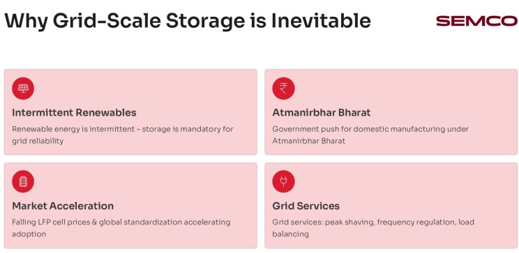
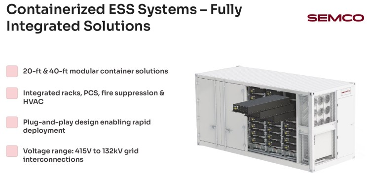
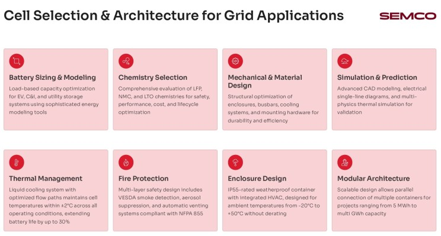
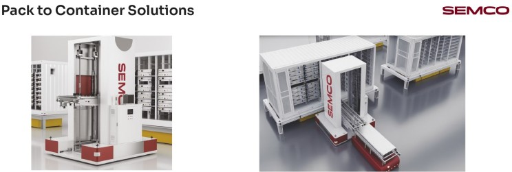
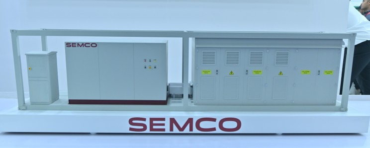
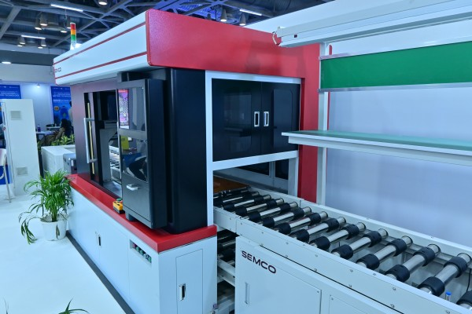
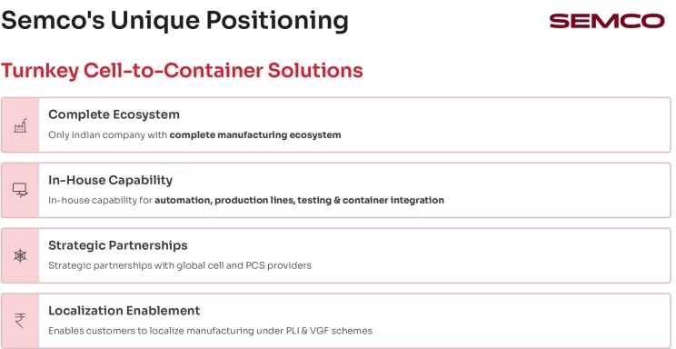

The energy storage landscape in India is undergoing a transformative shift, driven by the inevitable integration of renewable energy into the grid and growing government support for domestic battery manufacturing. Within this evolving ecosystem, Semco Infratech has emerged as a critical player with a unique value proposition: complete cell-to-container solutions that bridge the gap between battery cells and deployment-ready grid storage systems.
Why Grid-Scale Storage is Non-Negotiable
The business case for large-scale battery energy storage systems (BESS) is strengthening on multiple fronts. Renewable energy sources—solar and wind—are inherently intermittent, making reliable grid storage mandatory for consistent power supply. Beyond grid stability, BESS systems enable peak shaving, frequency regulation, and load balancing, providing essential grid services that traditional infrastructure cannot match. Simultaneously, India's Atmanirbhar Bharat (self-reliant India) initiative is catalyzing domestic battery manufacturing, while falling Lithium Iron Phosphate (LFP) cell prices combined with global standardization are accelerating BESS adoption across commercial, industrial, and utility-scale applications.

Fully Integrated Containerized Energy Storage Systems
Semco's containerized ESS solutions represent a significant leap in deployment efficiency. The company offers 20-foot and 40-foot modular container solutions that integrate all essential components—racks, power conversion systems (PCS), fire suppression, and HVAC—into a single, plug-and-play package. This level of integration dramatically reduces on-site assembly time and complexity, enabling rapid deployment across diverse grid interconnection voltages ranging from 415V to 132kV.
The modular architecture is engineered for scalability, allowing multiple containers to be connected in parallel for projects spanning from 5 MWh to multi-GWh capacities, making Semco's solutions adaptable to both emerging markets and large-scale grid infrastructure projects.

Precision Engineering: From Cell Selection to Thermal Management
The journey from raw cells to deployment-ready containers requires sophisticated engineering across multiple dimensions. Semco's approach encompasses:
- Battery Sizing and Modeling: Using advanced energy modeling tools, the company optimizes capacity based on load profiles for electric vehicle (EV), commercial and industrial (C&I), and utility storage applications.
- Chemistry Selection: Rather than adopting a one-size-fits-all approach, Semco evaluates LFP, NMC (Nickel Manganese Cobalt), and LTO (Lithium Titanium Oxide) chemistries through comprehensive assessments considering safety, performance, cost, and lifecycle optimization.
- Thermal Management: A critical differentiator in Semco's design is the liquid cooling system with optimized flow paths that maintains cell temperatures within ±2°C across all operating conditions. This precision thermal control extends battery life by up to 30%—a meaningful improvement in lifecycle economics and project bankability.
- Fire Protection and Safety: Multi-layer safety protocols include VESDA smoke detection, aerosol suppression, and automatic venting systems compliant with NFPA 855, the leading fire safety standard for stationary battery systems. The IP55-rated weatherproof enclosure with integrated HVAC is engineered to operate across extreme ambient temperatures from -20°C to +50°C without performance derating.

Automated Manufacturing: The Cell-to-Pack Assembly Line
One of Semco's most impressive technical achievements is its end-to-end automated assembly line operating at 12-24 pieces per minute (PPM), spanning 66 meters in length with precise power requirements of 200-250 kW. This high-speed operation is enabled by:
- Robotic Precision: Integrated robotics handle Open Circuit Voltage (OCV) testing, precise cell stacking, CCD inspection, laser cleaning, and advanced laser welding, ensuring unparalleled accuracy in every assembly cycle.
- Exceptional Yield: The system achieves greater than 99.5% final yield through automated processes, substantially reducing material waste and associated costs while maintaining consistent quality.
- MES Integration: Manufacturing Execution System (MES) enabled tracking provides full data traceability and offline rework capabilities, giving manufacturers real-time visibility into production flow and quality metrics.

The cell-to-pack assembly process involves 21 distinct automated steps, from initial automatic cell loading and scanning through OCV sorting, plasma cleaning, module stacking, laser welding, and final pack-level end-of-life (EOL) testing, ensuring every battery pack meets strict performance standards before container integration.

Pack-to-Container Integration: The Final Mile
The transition from completed battery packs to containerized systems is orchestrated through precision handling equipment. Pack transfer cars move finished packs from the assembly line to the container interface, while XYZ gantry lifting modules with securing and positioning systems ensure accurate alignment and safe placement within containers. This mechanical integration prevents damage during transport and positioning, critical for protecting high-value energy storage assets.

Comprehensive Testing and Validation
Semco's high-voltage battery testing systems range from 100V to 1650V, scaled for varying power and test-duty requirements. These systems ensure high-voltage safety compliance and deliver the reliability and precision necessary to minimize field failures and maintain product quality.
BESS Container Testing – Assuring Grid-Ready Reliability
The GBBT Series is a high-precision charging and discharging test system for battery clusters, packs, modules, and cells. It delivers fast response, wide adaptability, and real-time data for charge/discharge testing, condition simulation, and cycle life validation—helping manufacturers improve quality, speed up R&D, and optimize production.

Key Performance Advantages: Wide Voltage & Current Range | Ultra-High Accuracy | Fast Dynamic Response | Energy-Saving Feedback Technology | Real-World Condition Simulation | Multi-Mode Programmable Testing
Lifecycle Economics and Bankability
Semco's integrated approach directly addresses the financial metrics that determine project viability. By combining total cost of ownership (TCO) optimization through superior thermal design and efficiency, levelized cost of storage (LCOS) minimization, and asset life extension planning, Semco enables projects to achieve stronger economic returns. Critically, the company's emphasis on data capture and traceability facilitates financing and insurance approvals, reducing friction in securing project capital.

Global Standards and Regulatory Compliance
Operating across geographies requires expertise in diverse regulatory landscapes. Semco provides end-to-end compliance support spanning:
- General cell and battery pack safety standards (IEC 62619, IEC 62620, UL 1642, UL 2054)
- EV battery requirements (UN 38.3, ISO 12405, IEC 62660, AIS 156, AIS 038)
- BESS-specific standards (UL 1973, UL 9540, UL 9540A, NFPA 855, IEC 62933)
- Military, marine, and environmental compliance frameworks.

India's Lithium Battery Manufacturing Backbone
Semco's market position underscores its importance to India's battery ecosystem. With 30+ years of engineering and manufacturing expertise, a team of 100+ skilled professionals, and partnerships with 500+ customers, the company powers over 20 GWh of annual production—positioning it as India's largest provider of lithium battery assembly and testing solutions and the only company in India offering complete cell-to-container equipment capabilities.
This vertical integration—from automated assembly lines through high-voltage testing systems to containerized deployment solutions—eliminates critical gaps in India's battery value chain while enabling localization opportunities under government incentive schemes like the Production Linked Incentive (PLI) and Viability Gap Funding (VGF).
Strategic Implications for the Industry
Semco's cell-to-container platform represents a paradigm shift in how BESS projects are conceived and executed. By consolidating design, manufacturing, testing, and deployment into an integrated workflow, the company reduces project timelines, improves quality consistency, and enhances financial predictability—all essential factors as India scales grid-scale energy storage to support its renewable energy ambitions. For project developers, utilities, and battery manufacturers, partnering with vertically integrated platforms like Semco reduces complexity, accelerates time-to-market, and provides the technical foundation for bankable, grid-ready storage systems.

Connect With Semco Infratech
Discover how Semco Infratech's cell to container testing solutions can elevate your manufacturing quality assurance and accelerate your BESS deployment timelines. From technical evaluations to production-scale implementations, our team provides end-to-end support to ensure your energy storage systems achieve market-leading reliability standards.
Looking to deploy reliable BESS systems?
Semco Infratech provides: Cell to BESS Container Solutions | Factory Setup & Turnkey Integration Support | On-Site Training & After-Sales Service
Ready to Evaluate or Install? Contact Semco Today
Email: sales@semcoindia.com Call: +91 8920681227 Website: www.semcoinfratech.com